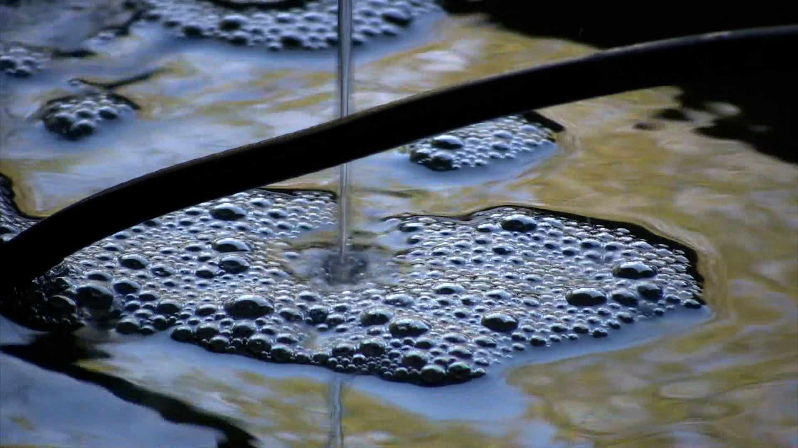

Fountain
2023 | 9 x 12 in, 4 x 6 in | acrylic paint and polymer clay on paper, photo printa painting of a still and a still image from my miniHDV camera.


Fountain
2023 | 9 x 12 in, 4 x 6 in | acrylic paint and polymer clay on paper, photo print